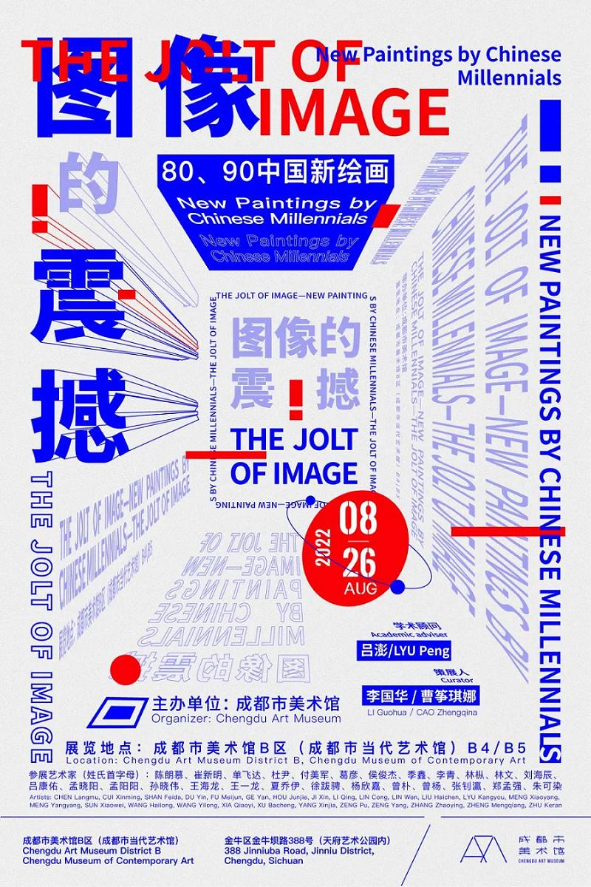

Exhibtions in Chengdu
Many young people nowadays love museums and exhibitions, and there are very many exhibitions in Chengdu every year, including those of the big official museums as well as many niche exhibitions.
Currently, there are more than 300 basic exhibitions in the city's museums, more than 220 temporary exhibitions held annually, and 25.5 million visitors annually.*
But in general, the exhibition information is rather scattered, and sometimes people miss their favorite exhibitions because not getting information in time.In addition, since the exhibition information is scattered in various websites, there is no unified classification, and it is very troublesome to collect information from various platforms to choose one among countless exhibitions.
* Src. Guangming Daily
For more details about persona, please refer to my journal!